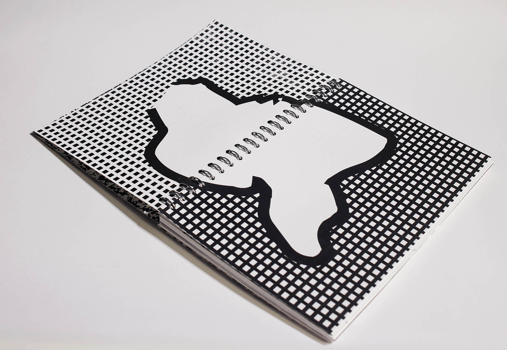
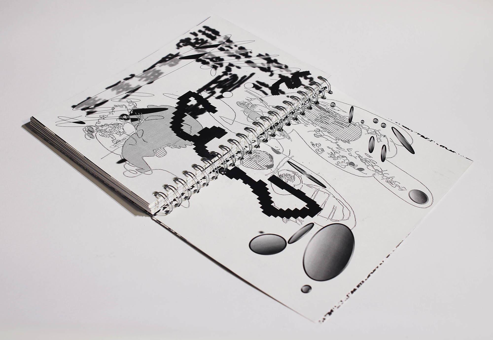
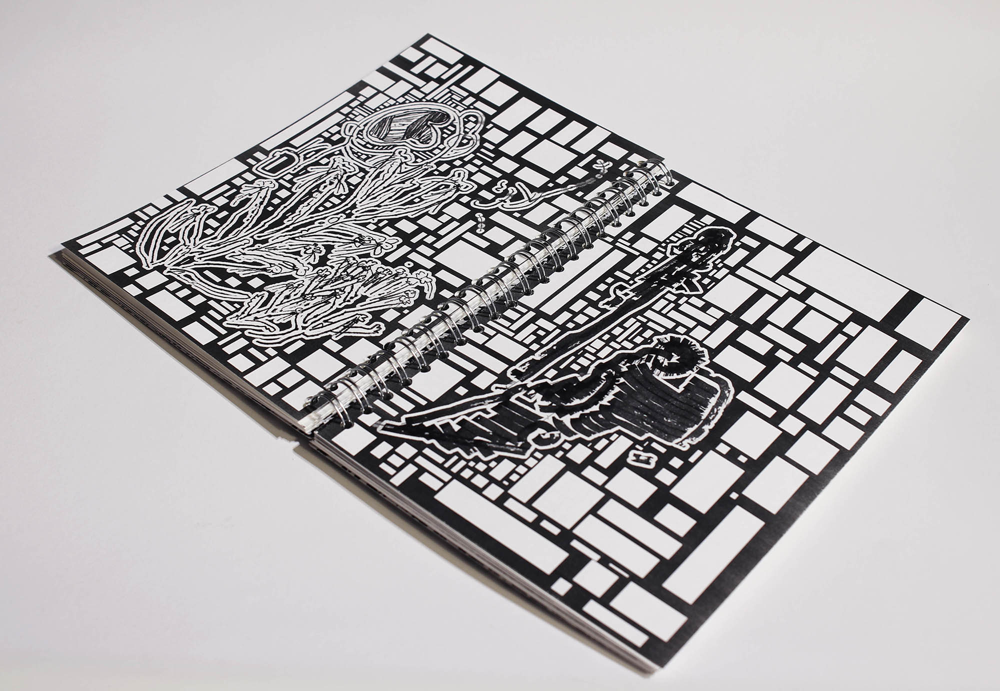
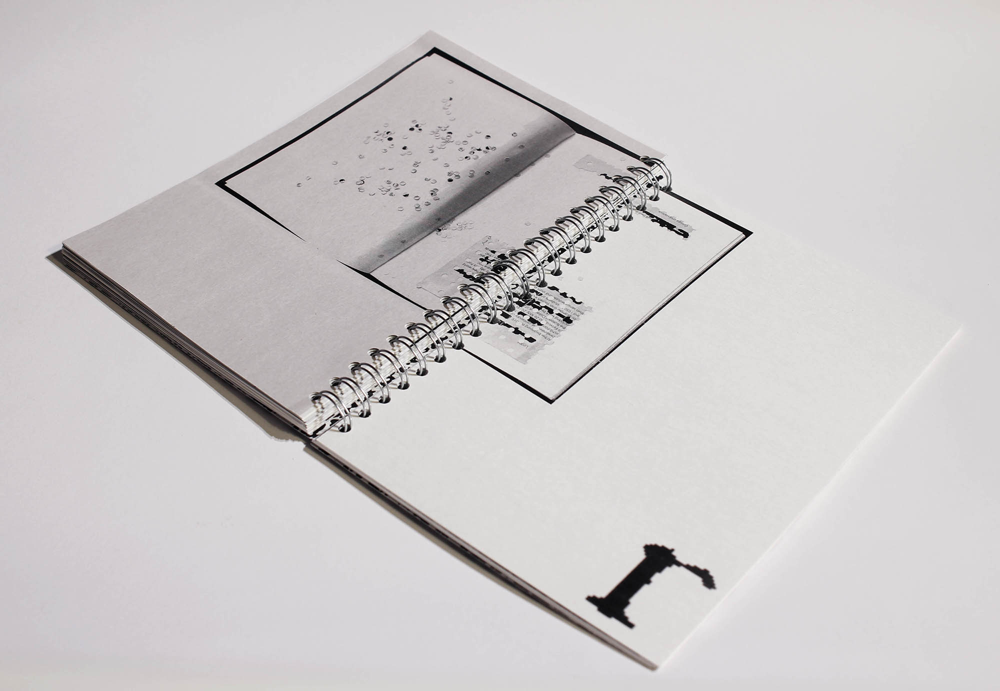
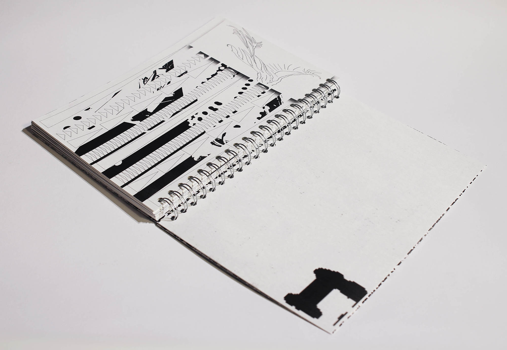

Because of the pandemic, Couldn't use the print shop. So I made a visual diary using a home printer. Which is not so high quality. So I had to consider that low resolution and glitch. And it's only possible to print B/W.
The good thing about using a home printer is I can use various papers from very thick to thin ones. So, I've chosen 5 different papers from 70g to 300g. From matte to glossy.
Type of work: Book



